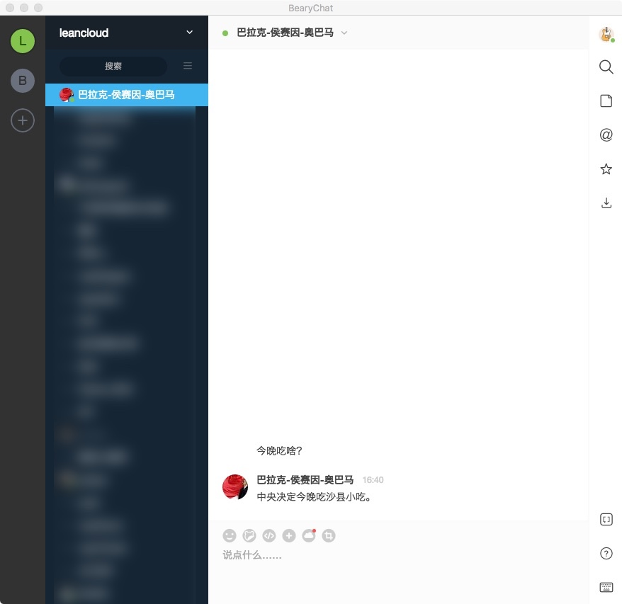

class: center, middle, inverse # 快速搭建聊天机器人 <img src="image/schematic.svg" width="100%" /> --- class: center, middle, inverse # 安龙 @ .red[LeanCloud] --- class: center, middle, inverse ## 家住北京市海淀区的程序员小张 ## 最近遇到了一件烦心事 --- class: center, middle, inverse ## 「今天晚上要吃啥？」 --- class: center, middle, inverse ## 产品经理给出了一个解决方案： --- class: center, middle, inverse <img src="image/Unknown1.png" height="500px" /> --- class: center, middle, inverse ## 实现一个微信聊天机器人 --- .left-column[ ## API ] .right-column[ 获取微信通讯协议 - 使用 tcpdump 分析微信协议 ] --- .left-column[ ## API ] .right-column[ 获取微信通讯协议 - ~~使用 tcpdump 分析微信协议~~ [.red.bold[失败]] ] --- .left-column[ ## API ] .right-column[ 获取微信通讯协议 - ~~使用 tcpdump 分析微信协议~~ [.red.bold[失败]] - 使用 Chrome 分析微信协议 ] --- .left-column[ ## API ] .right-column[ 获取微信通讯协议 - ~~使用 tcpdump 分析微信协议~~ [.red.bold[失败]] - ~~使用 Chrome 分析微信协议~~ [.red.bold[失败]] ] --- .left-column[ ## API ] .right-column[ 获取微信通讯协议 - ~~使用 tcpdump 分析微信协议~~ [.red.bold[失败]] - ~~使用 Chrome 分析微信协议~~ [.red.bold[失败]] - 寻找开源库 ] --- .left-column[ ## API ] .right-column[ 获取微信通讯协议 - ~~使用 tcpdump 分析微信协议~~ [.red.bold[失败]] - ~~使用 Chrome 分析微信协议~~ [.red.bold[失败]] - 寻找开源库 [.green.bold[成功！]] ] --- .left-column[ ## API ## Coding ] .right-column[ #### 「奥巴马」源码 ```js // 登录微信，初始化等代码 weixin.on('message', function(sender, message) { if (sender !== '程序员小张' || sender !== '产品经理') { wenxin.sendMessage({ receiver: sender, content: '一曲忠诚的赞歌。', }); return; var choices = [ '沙县小吃', '沙县小吃', '沙县小吃', ]; var result = utils.select(choices); weixin.sendMessage({ receiver: sender, content = `中央决定今晚吃${result}。` }); } }); ``` ] --- .left-column[ ## API ## Coding ## Deploy ] .right-column[ #### 部署「奥巴马」进程 - 购买云服务器 - 程序员小张资产 = 程序员小张资产 - 50¥ - 初始化环境（） - 程序员小张寿命 = 程序员小张寿命 - 2421s - 安装 node.js 环境 - 程序员小张寿命 = 程序员小张寿命 - 1423s - 部署代码 - 程序员小张寿命 = 程序员小张寿命 - 1324s ] --- class: inverse, middle, center # 上线，大受欢迎 --- class: inverse, middle, center # 「小张，你这个机器人 # 能不能在 .red[BearyChat] 里用？」 --- .left-column[ ## API ] .right-column[ - 阅读 BearyChat 文档 ] --- .left-column[ ## API ## Coding ] .right-column[ #### 「奥巴马」的另外一部分源码 ```js var express = require('express'); var app = express(); app.post('/xxxxxxxxxxx', function(req, res) { if (req.message.sender != '程序员小张' || req.message.sender != '产品经理') { var reply = '一曲忠诚的赞歌。'; } else { var choices = [ '沙县小吃', '沙县小吃', '沙县小吃', ]; var result = utils.select(choices); var reply = `中央决定今晚吃${result}。`; } requests.post('http://xxxxxxxxxx', { json: { content: reply, } }); }); ``` ] --- .left-column[ ## API ## Coding ## Deploy ] .right-column[ #### 部署「奥巴马」进程 - 购买云服务器 - 程序员小张资产 = 程序员小张资产 - 50¥ - 初始化环境（） - 程序员小张寿命 = 程序员小张寿命 - 2421s - 安装 node.js 环境 - 程序员小张寿命 = 程序员小张寿命 - 1423s - 部署代码 - 程序员小张寿命 = 程序员小张寿命 - 1324s ] --- class: inverse, middle, center  --- class: inverse, middle, center # 「小张，你这个机器人 # 能不能在 .red[QQ] 里用？」 --- class: inverse, middle, center # 「小张，你这个机器人 # 能不能在.red[iMessage]里用？」 --- class: inverse, middle, center # 「小张，你这个机器人 # 能不能在.red[oX^*^D*AW]里用？」 --- class: inverse, middle, center # 「小张，你这个机器人 # 能不能在.red[dfqwdwq]里用？」 --- class: inverse, middle, center  --- class: inverse, middle, center # .red[调试？] --- class: inverse, middle, center # .red[测试？] --- class: inverse, middle, center # Hubot! <img src="image/schematic.svg" width="100%" /> --- .left-column[ # Hubot ## 开源 ] .right-column[ - GitHub 出品 - MIT 协议 - 众多第三方 Script - .green[npm 搜索 「hubot scripts」有真相] ] --- .left-column[ # Hubot ## 开源 ## 多平台 ] .right-column[ - BearyChat - 微信 - QQ - Slack - iMessage - XMPP - Twitter - Skype - ... ] .footnote[npm 搜索 「hubot adaptor」，有真相] --- .left-column[ # Hubot ## 开源 ## 多平台 ## 测试 ] .right-column[ ### Shell ```sh ➜ obama git:(master) ./bin/hubot obama> 今晚吃啥？ obama> 中央决定今晚吃沙县小吃。 ``` ] --- .left-column[ # Hubot ## 开源 ## 多平台 ## 测试 ] .right-column[ ### 单元测试 ```coffee Helper = require('hubot-test-helper') chai = require 'chai' expect = chai.expect helper = new Helper('../scripts/example.coffee') describe 'example script', -> beforeEach -> @room = helper.createRoom() afterEach -> @room.destroy() it '今晚吃啥？', -> @room.user.say('程序员小张', 'did someone call for a badger?').then => expect(@room.messages).to.eql [ ['程序员小张', '今晚吃啥？'] ['奥巴马', '中央决定今晚吃沙县小吃。'] ] ``` ] --- .left-column[ # Hubot ## 开源 ## 多平台 ## 测试 ## 示例 ] .right-column[ ### Send & reply ```js module.exports = function(robot) { robot.hear('/今晚吃啥/', function(res) { res.send(res.random([ '沙县小吃', '沙县小吃', '沙县小吃', ])); }); } ``` ] --- .left-column[ # Hubot ## 开源 ## 多平台 ## 测试 ## 示例 ] .right-column[ ### Capturing data ```js module.exports = function(robot) { robot.hear('/奥总统，你觉得(.*)做下任美国总统好不好？/', (res) => { var candidate = res.match[1]; res.send(` 你问我啊，我可以回答你一句“无可奉告”，你们也不高兴，那怎么办？ 我讲的意思不是我钦点**${candidate}**当下任美国总统。 你问我支持不支持，我是支持的，我就明确地告诉你这一点。 `); }); } ``` ] --- .left-column[ # Hubot ## 开源 ## 多平台 ## 测试 ## 示例 ] .right-column[ ### Events ```js module.exports = function(robot) { robot.router.post('/happy-birthday', function(req, res) { robot.emit('birthday', { user: {} // user, }); res.send('ok'); }); robot.on('birthday', function(data) { robot.send(data.user, ` 明明说好是三年，三年之后又三年， 三年之后又三年，都快十年了，老大! `); }); } ``` ] --- .left-column[ # Hubot ## 开源 ## 多平台 ## 测试 ## 示例 ## 部署 ] .right-column[ ### Heroku ```sh ➜ obama git:(master) heroku login ➜ obama git:(master) heroku create Creating rosemary-britches-123... done, stack is cedar http://xxx.herokuapp.com/ | git@heroku.com:xxx.git Git remote heroku added ➜ obama git:(master) heroku config:set\ HUBOT_BEARYCHAT_TOKENS=guan-hai-ting-tao ➜ obama git:(master) git push heroku ... ``` .red[Done!] ] --- .left-column[ # Hubot ## 开源 ## 多平台 ## 测试 ## 示例 ## 部署 ] .right-column[ ### LeanCloud ```sh ➜ obama git:(master) npm install --save\ hubot-leanengine-script # add `hubot-leanengine-script` to `external-scripts.json` ➜ obama git:(master) lean login ➜ obama git:(master) lean init ➜ obama git:(master) lean env export\ HUBOT_BEARYCHAT_TOKENS=guan-hai-ting-tao ➜ obama git:(master) lean deploy ... ``` .red[Done!] ] --- class: inverse, middle, center # F & Q